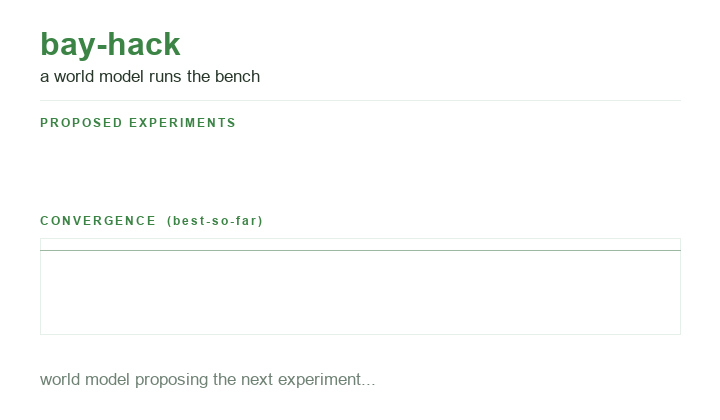
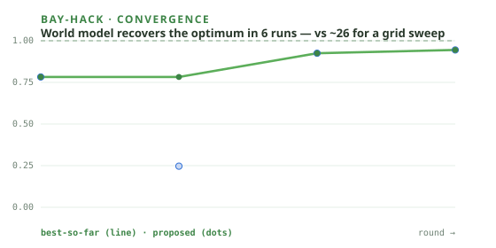

24hr AI for Science · World Models Hack @ Zeon Systems
Zeon's physical world model represents the bench and safe execution. A complementary scientific world model chooses the next 40 uL formulation. Invalid plans are refused before motion. Physical MCP executes verified wells and volumes, measurement plus a Rhodamine-B gate verify the result, and the accepted well moves downstream.
See it run
First, a reused-tip plan is refused with zero robot commands. Then two seed wells and four adaptive wells run visibly. Each has a destination, volumes, fresh tips, physical gates, objective status, uncertainty, and measurement provenance. ACCEPT triggers a follow-up plan to H12.


# run it yourself -- zero dependencies $ python -m bayhack.preflight # zero-motion readiness audit $ python -m bayhack.dashboard # live browser demo $ python -m bayhack.demo # narrated CLI $ python -m bayhack.safety # zero-command refusal proof
The closed loop
The scientific model decides which experiment should run next. Zeon's physical model decides how to execute safely in the current world. The trust receipt joins plan, motion, measurement, verification, and follow-up.
One model predicts scientific outcomes. One model tracks the physical bench. A measurement can update the next decision only after the physical gates pass. ACCEPT also requires the declared objective and uncertainty criteria.
Goal → verify or refuse the 40 uL plate plan → scientific model chooses the next well → Zeon's physical model executes in the live scene → measured camera or reader value + volume gate + CV → objective + uncertainty accept / escalate → 20 uL follow-up to H12.
What composes into what
The loop is assembled from existing di-omics repos, with one narrow adapter to the venue's physical model.
plr-epigenome · tipseq_plr/sow.py: a natural-language goal becomes a routed pipetting protocol.
ml-bio-eval / lab-world-model: a GP world model + ParEGO propose the next well to run.
plr-mcp: plr_setup_deck, plr_transfer, plr_read_plate drive the deck and plate reader.
plr-lab-robot: Workcell, vision_guided_pick, DecapSkill handle labware and lids.
plr-epigenome · validation/rhodamine.py: Rhodamine-B linearity, accuracy, and CV gate.
lab-cv: computer-vision checkpoints confirm each physical step happened.
bayhack/measurements.py: calibrated reader CSV or camera colorimetry produces source-specific evidence.
ml-bio-eval: split-conformal decides accept / reject / escalate before the loop repeats.
bayhack/zeon_bridge.py: maps verified actions into Zeon's scene-aware workflow executor.
The two-model composition
Zeon models the physical world. bay-hack models the scientific response. Coupling them lets the robot adapt to both the changing bench and the changing evidence, while every liquid transfer stays inspectable through PyLabRobot and MCP.
Quickstart
The demo runs the same scientific loop against a simulator: no lab and no dependencies.
# stdlib only: six visible, verified plate plans $ python -m bayhack.safety --output run_artifacts/refusal.json $ python -m bayhack.demo --ledger run_artifacts/trust.json $ python -m bayhack.dashboard --receipt run_artifacts/trust.json
Zero runtime dependencies. CI green. The trust receipt identifies every value as modeled, simulated, measured, or hardware-validated. Receipt replay presents physical evidence without moving hardware again.